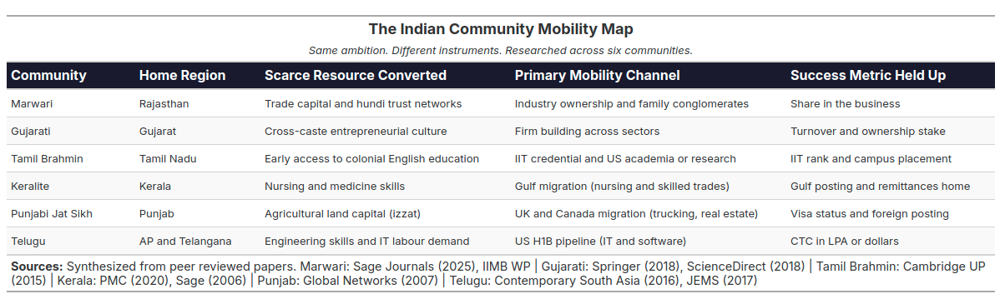

THE IMAGE AND THE PERSON
What Jiddu Krishnamurti and systems thinking teach a leader about seeing people as they are
What Jiddu Krishnamurti and systems thinking teach a leader about seeing people as they are
Personal essays · Since 2017
I write where psychology, Indian culture, analytics and management meet — reflections, long-running series, and stories about love, trust and the people we become.
Canvass the world around us, then analyse it honestly — that has been the idea behind every piece here.
A novel in the making, published chapter by chapter: eight lives, each carrying one emotion, woven into a single story about what grounds us and reminds us we are human.
OngoingAI, analytics and leadership seen as systems: why data science misses business value, and how leaders end up managing images instead of people.
CompletedA long walk through Rishis, Gurus, Gunas and the three Yogas — my personal comprehension of Sanātana Dharma, plus a glossary of its key ideas.
CompletedWritten as the pandemic unfolded: facts and fear, lockdowns and recession, the second wave — and what it taught us.
